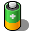

Стан живлення (PowerStatus)
| Deskbar: | ||
| Розташування: | /boot/system/apps/PowerStatus | |
| Налаштування: | ~/config/settings/PowerStatus settings |
Стан живлення (PowerStatus) показує інформацію про рівень заряду (розряду) батареї та використовується тільки у мобільних комп'ютерах. Якщо він не працює то при запуску аплет спитає у якому вигляді його відкрити у режимі вікна чи поселити у Deskbar. У режимі вікна Ви отримуєте можливість зміни іконки при зміні розміру вікна та використати Реплікант (Replicant) для переміщення його на робочий стіл.
Будь-де встановлений він працює через контекстне меню, яке викликається правою кнопкою мишки.
Зауваження: Стан живлення (PowerStatus) для роботи потребує працюючої підтримки ACPI.

Контекстне меню пропонує наступні опції:
| Показує рівень заряду батареї у відсотках або час, що залишився. | ||
| Показує іконку аплета. | ||
| Перемикання між режимами відображення рівня заряду батареї у відсотках або часу, що залишився (Пункт має бути активним. | ||
| Показує розширене вікно інформації про батарею. | ||
| Показує вікно Про... (About...). | ||
| Вихід з аплету Стан живлення ( PowerStatus). |
Коли пункт активний, рівень батареї поки триває зарядка відображається в дужках.